Goniometrické funkcie vznikli z pomerov strán v pravouhlom trojuholníku. Neskôr sa ich definícia rozšírila na jednotkovú kružnicu. Vďaka tomu môžeme dnes tieto pomery strán používať ako funkcie. Na jednotkovej kružnici sú goniometrické funkcie definované pomocou dĺžok jednotlivých čiar. Na obrázku 1. sú tieto čiary vyznačené farebne.
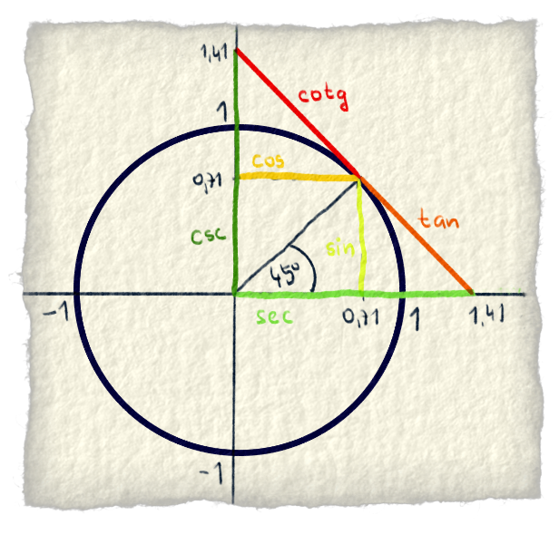
Obr. 1.: Na jednotkovej kružnici sú zobrazené hodnoty goniometrických funkcií pomocou čiar. Dĺžka čiary je rovná hodnote goniometrickej funkcie. Doporučujeme dobre si všimnúť tri čiary: bledožltú s nápisom sin, tmavožltú s nápisom cos a oranžovú s nápisom tan. Neskôr v článku ich budeš potrebovať.
V článku Goniometrické funkcie je opísané, ako goniometrické funkcie vznikli a je tam aj bližšie vysvetlená definícia týchto funkcií na jednotkovej kružnici.
Sínus
V 12. storočí istý pán Gerardo z Cremony prekladal staré arabské texty o geometrii do latinčiny. Pri preklade slova "jiba" sa pomýlil a namiesto "jiba" prečítal "jaib". "Jiba" znamená tetiva oblúka a "jaib" znamená záhyb na šatách. Asi mu to ani neprišlo čudné a tak sa latinské slovo "sinus", znamenajúce záhyb na šatách, udomácnilo v matematike. O štyri storočia neskôr, v roku 1590, slovo "sinus" použil pán Thomas Fale na pomenovanie pomeru medzi protiľahlou stranou trojuholníka a jeho preponou.[1]
Sínus, ako funkcia, je zadefinovaná na jednotkovej kružnici pomocou dĺžky jednej čiary. Je to konkrétne bledožltá čiara z obrázku 1. Na obrázku 2 je vysvetlené, prečo je to práve dĺžka tej čiary.
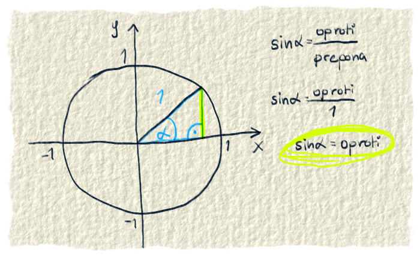
Obr. 2.: Máme jednotkovú kružnicu a chceme na nej zadefinovať sínus. Samozrejme chceme si čo najviac zjednodušiť počítanie. Vieme, že sínus je protiľahlá strana/prepona. No a akým číslom sa najlepšie delí? Predsa číslom 1. Takže treba trojuholník s preponou 1. Presne taký trojuholník dostaneme, keď ako preponu zvolíme "polomer" kružnice. Sínus je teda protiľahlá strana/prepona. To je protiľahlá strana/1, čo vlastne znamená, že sínus je rovný protiľahlej strane. A protiľahlá strana je tá žltá čiara. To je dôvod, prečo môžeme sínus zadefinovať na jednotkovej kružnici pomocou dĺžky tej žltej čiary.
Goniometrické funkcie a teda aj sínus sa dá zobraziť viacerými spôsobmi. Každý spôsob je na niečo dobrý. Keď je zobrazený na jednotkovej kružnici, spolu s ďalšími funkciami, je pekne vidieť vzťahy medzi týmito funkciami. Napríklad, že čím je väčší sínus, tým je menší kosínus. Ďalej sa sínus dá zobraziť v grafe. Tu je sú pekne vidieť jeho vlastnosti. Napríklad jeho definičný obor, obor hodnôt, rôzne posunutia natiahnutia, či je k nemu niečo pripočítané a tak. Na grafe pekne vidno aj to, že sínus je periodický, a teda sa po určitom čase opakuje. Sínus sa dá zobraziť aj v tabuľke. Tu sú vidieť konkrétne hodnoty pre konkrétne uhly.
Obr. 3.: Sínus je vypočítaný pre pár uhlov. Je zobrazený v grafe a na jednotkovej kružnici. Tabuľka by sa do obrázku nezmestila, tak je tam aspoň pre každý krok uvedený uhol a jeho hodnota. Sínus nemusí byť iba taký pekný, že ide od -1 po 1 a perióda je 360°. Môže byť hocijako ponaťahovaný a poposúvaný. Naťahovať sa dá tak, že sa vynásobí nejakými číslami. Posúva sa tak, že sa k nemu zasa nejaké čísla pripočítajú.
$$ a \cdot sin(b \cdot x + c) + d $$
Na nasledujúcich obrázkoch je nakreslené, ako sínus menia jednotlivé písmenká. Bledomodrou čiarou je nakreslený "obyčajný" sínus (teda sin(x)). Tmavomodrou čiarou je nakreslený zmenený sínus.
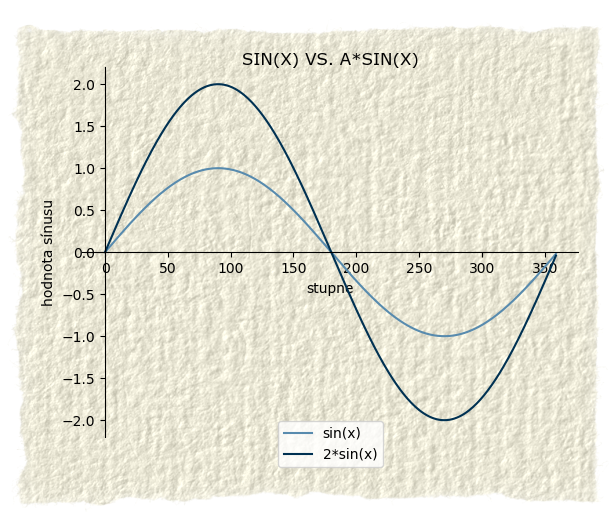
Obr. 4.: Písmenom a sa násobí výsledok sínusu. Znamená to, že keď dostaneme výsledok zo sínusu, tak ho ešte a-krát zväčšíme. Na obrázku sme ho zväčšili dva-krát. Teda aj graf bude dva-krát vyšší. Pôjde od -2 po 2. Takémuto natiahnutiu sínusu sa hovorí aj amplitúda.
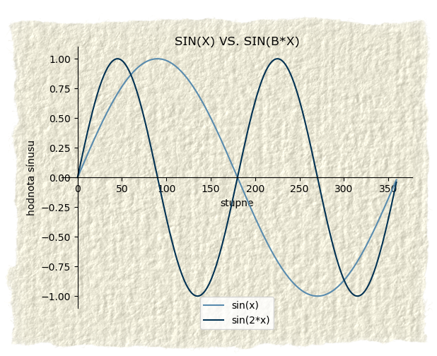
Obr. 5.: Písmenom b sa násobí uhol vnútri sínusu. Znamená to, že uhly sa síce dávajú do sínusu pekne po rade, ale výsledok je akoby pre každý b-tý uhol. Napríklad: funkcia sin(4*x). Za x postupne dosadíme 1°, 2°, 3°. S týmito číslami sa však najprv stane to, že sa vynásobia so štvorkou a až potom sa z nich spraví sínus. Teda pre 1° bude výsledok sin(4°), pre 2° bude výsledok sin(8°) a pre 3° to bude sin(12°). Násobenie písmenkom b sínus ponaťahuje/poskŕča do šírky. Skrátka vzdialenosť medzi kopčekmi bude iná. Písmeno b mení dĺžku periódy.
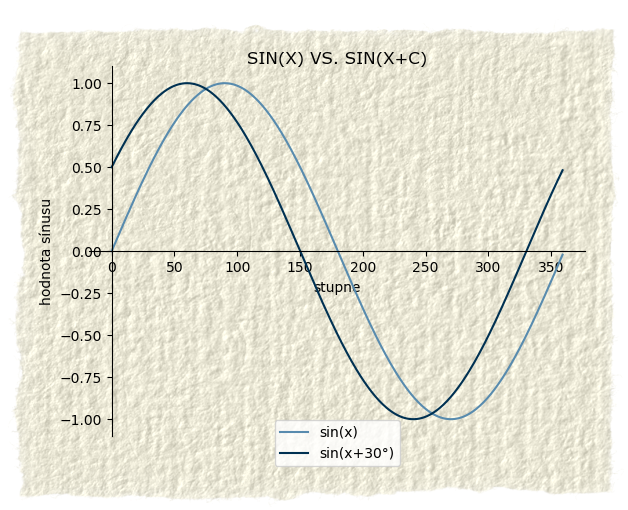
Obr. 6.: Písmeno c sa pripočíta k stupňom vnútri sínusu. Ono posunie ten sínus o c stupňov. To znamená, že do sínusu sa síce dá nejaký uhol, ale výsledok bude akoby pre uhol o c stupňov ďalej. Napríklad si povedzme, že by bolo c=30°, funkcia by bola sin(x+30). Do sínusu by sme dali napríklad 45°, ale výsledok by akoby bol pre uhol 75°. Písmeno c posúva celý sínus doľava alebo doprava. Toto posunutie sa volá fázový posun.
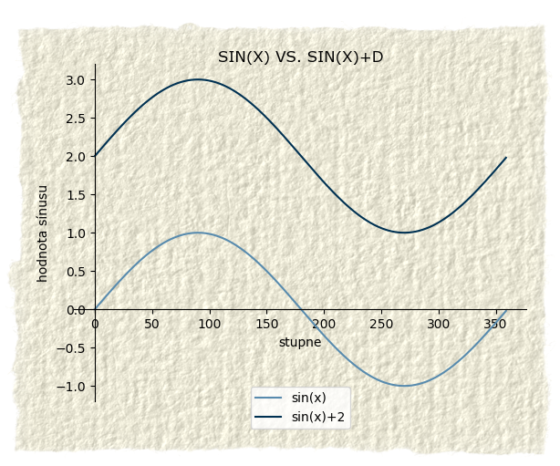
Obr. 7.: Písmeno d sa pripočítava k výsledku sínusu. To spôsobí, že sínus už akoby nebude začínať na y osi v nule, ale práve na čísle d. Bude teda posunutý nahor alebo nadol. Tomuto sa hovorí aj vertikálny posun.
Aby si lepšie rozumel, čo vlastne ten sínus vyprodukuje z daného uhlu, skús si vypočítať túto tabuľku a aj si to nakresli do grafu.
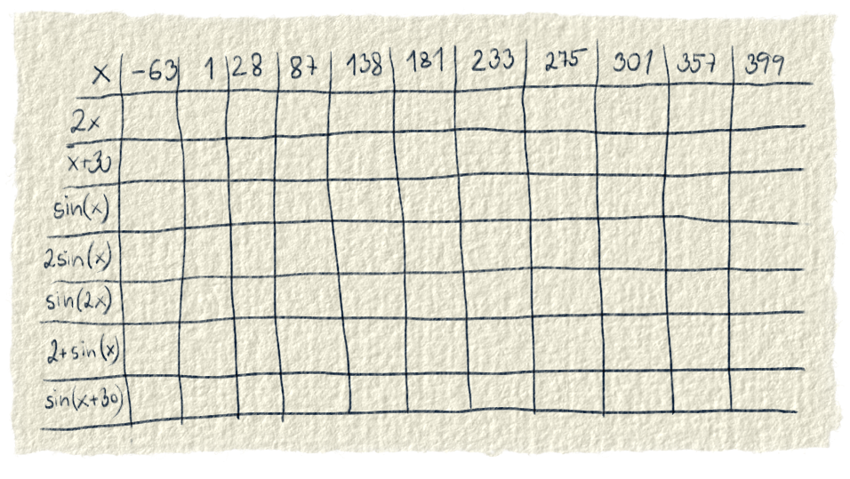
Obr. 8: Tu je tabuľka so zopár uhlami. Vyrátaj si x a aj sínus. Dobre si všimni, ako sa menia x a sínus, keď sa k nim niečo pripočítava alebo sa násobia. Keď klikneš/ťukneš na obrázok, zobrazia sa ti výsledky. Odporúčame však neklikať, dokiaľ to sám nebudeš mať vyrátané.
Ak máš tabuľku vyrátanú, gratulujeme, tento odsek môžeš preskočiť. Ak sa ti nechce, tak sa prestaň zabávať hlúposťami a bež počítať. Ak nevieš ako začať rátať, dáme ti nápovedu:
Najprv si vypočítaj druhý a tretí riadok. Počíta sa tam 2*x a x+30. Nie je to nutnosť, ale poteší, keď to bude treba dosadiť do sínusu. Počíta sa to tak, že zoberieš daný uhol a dosadíš ho za x, napr.: 2*(-63)=-126.
Potom vypočítaj štvrtý riadok so sin(x). Tiež ho netreba, ale akoby si našiel, keď ho budeš používať ďalej a nebudeš musieť rátať stále to isté. Ráta sa tak, že sa uhol z prvého riadku dosadí za x a potom sa z toho vypočíta sínus, napr.: sin(-63)=-0,89.
V posledných štyroch riadkoch sa ráta sínus, ktorý je nejak zmenený, alebo sa aspoň mení x, ktoré doňho vstupuje.
V piatom riadku je 2*sin(x). Tu najprv treba dosadiť uhol za x, spraviť z toho sínus a nakoniec to vynásobiť dvomi: 2*sin(-63)=2*(-0,89)=-1,78.
V šiestom riadku je sin(2x). Tu treba najprv vypočítať 2x a potom z toho spraviť sínus. Keďže je 2x už vypočítané v druhom riadku, tu ho stačí len dosadiť. Napr.: sin(2*(-63))=sin(-126)=-0,81.
V siedmom riadku sa ráta 2+sin(x). Tu sa najprv spraví sínus x a potom sa k výsledku pripočíta dvojka. Napr.: 2+sin(-63)=2+(-0,81)=2-0,81=1,11.
V poslednom ôsmom riadku je sin(x+30). Najprv sa dosadia stupne za x, pripočíta sa k nim ďalších 30 stupňov a z toho sa spraví sínus. Napr: sin(-63+30)=sin(-33)=-0,54.
Tu je pripravené malé matematické ihrisko, kde si môžeš sínus ponaťahovať do vôle. Všimni si, ako jednotlivé písmená menia graf. Pri hraní s grafom si daj pozor, lebo os x je v radiánoch, nie v stupňoch. Teda aj hodnota písmena c je v radiánoch a nie v stupňoch. To, ako písmenká menia graf nezávisí od jednotiek, v ktorých sú uvedené uhly. Teda takisto sa bude graf meniť, či uhly budú v stupňoch alebo v radiánoch.
Ak si sa už do vôle vyšantil na grafe sínusu, tu je zopár otázok:
Čo sa stane keď bude a desatinné číslo medzi 0 a 1?
Čo sa stane, keď a bude záporné?
Aké musí byť b, aby bola perióda sínusu (vzdialenosť medzi kopčekmi) väčšia ako pri sin(x)?
Aká hodnota b spôsobí, že perióda sínusu bude najmenšia (najmenšia, aká sa dá nastaviť v našom grafe)?
Čo sa stane, keď bude b záporné?
Aké musí byť c, aby sa graf posunul doľava?
Aké musí byť c, aby sa graf posunul doprava?
Pomocou písmena d posuň graf tak, aby na y osi začínal na čísle 5.
Ktorými písmenami sa dá otočiť graf tak, aby bol dolu hlavou (že od [0,0] nerastie hore k 1, ale klesá dole k -1)? Aké musia mať hodnoty? Prečo je to tak?
Kosínus
Pán Edmund Gunter sa narodil v Hertfordshire v roku 1581. Vyštudoval teológiu a stal sa anglickým duchovným. No jeho celoživotnou láskou bola matematika, teda hlavne vzťah medzi matematikou a reálnym svetom. Skoro sa stal aj jedným z prvých profesorov geometrie na Oxfordskej univerzite. Istý pán Savile daroval Oxfordu peniaze, aby si mohli otvoriť dve prvé prírodovedné fakulty - astronómiu a geometriu. Na pozíciu profesora geometrie sa hlásil aj Gunter. Na pracovný pohovor si doniesol niektoré vynálezy na určovanie vzdialenosti. Práve ukazoval, ako sa dajú zmerať vzdialenosti medzi hviezdami, keď ho prerušil pán Savile. Nakričal naňho, že to nie je geometria, ale len obyčajné predvádzanie trikov. Potom ho s výsmechom poslal domov. A tak sa pán Gunter nestal prvým profesorom geometrie na Oxforde. Veľká škoda sa nestala, lebo začal učiť inde. Stal sa profesorom astronómie v Londýne. Z jeho vynálezov je pre nás najdôležitejší jeden. V roku 1620 použil prvý-krát slovo kosínus.[2] Toto slovo vzniklo z dvoch latinských slov complementi sine, ktoré znamenajú doplnok k sínusu.
Kosínus ako funkcia je na jednotkovej kružnici definovaný pomocou dĺžky jednej čiary. Je to tmavožltá čiara z obrázku 1. Na obrázku 9 je vysvetlené, prečo je to práve tá tmavožltá čiara.
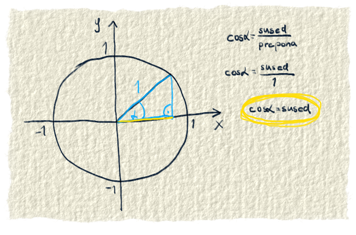
Obr. 9.: Kosínus chceme definovať ako funkciu. V článku Goniometrické funkcie sme si povedali, že sa to dá na jednotkovej kružnici. Vieme, že kosínus je priľahlá strana/prepona. Samozrejme chceme čo najmenej počítať. Dobre si obzrieme jednotkovú kružnicu a zistíme, že tam dokážeme dostať pravouhlý trojuholník s dĺžkou prepony 1, keď ako preponu použijeme "polomer" kružnice. Kosínus teda definujeme ako priľahlá strana/prepona. Prepona je rovná 1, dostaneme: kosínus α = priľahlá strana/1, teda kosínus α = priľahlá strana. No a priľahlá strana je tá tmavožltá čiara z obrázku 1.Aj kosínus sa dá zobraziť na jednotkovej kružnici, v grafe a v tabuľke. Na jednotkovej kružnici vidno jeho vzťahy s ostatnými funkciami alebo aj to, v ktorom kvadrante je kladný a v ktorom záporný. V grafe vidno jeho vlastnosti. Definičný obor, obor hodnôt, či je s niečím vynásobený, či je k nemu niečo pripočítané a podobne. Je tu vidno aj to, že je periodický, lebo sa jeho hodnoty opakujú. V tabuľke sú zasa vidno konkrétne hodnoty pre konkrétne uhly. Z grafu alebo z jednotkovej kružnice sa len ťažko dá vyčítať presná hodnota kosínusu pre daný uhol.
Obr. 10.: Kosínus je vypočítaný pre pár uhlov. Sú tu uhly aj väčšie ako 360°(teda počet stupňov, ktoré má kruh). Keď sa presiahne táto hranica, kosínus sa začne opakovať, lebo ide akoby odznova. Je to zobrazené na jednotkovej kružnici a v grafe. Tabuľka sa nezmestila, tak je tu napísaný iba uhol a jeho hodnota kosínusu. Ak ti tabuľka bude veľmi chýbať, pokojne si ju sprav vedľa na papier 😉.Ani kosínus nemusí byť poslušný, začínať v 0,0 a ísť od -1 po 1. Môže začínať hocikde, ísť od hocikadiaľ po hocikadiaľ a kopčeky tiež môžu byť od seba vzdialené ako chcú. O všetko sa postarajú písmenká a,b,c,d, za ktoré sa dajú dosadiť rôzne čísla.
$$ a \cdot cos(b \cdot x + c) + d $$
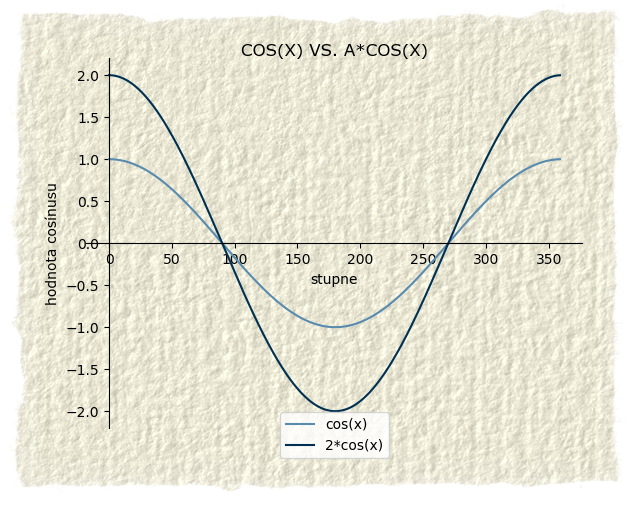
Obr. 11.: Písmeno a násobí výsledok kosínusu. Kosínus teda dostane nejaký uhol, nájde preň prislúchajúci pomer strán a vráti výsledok. Tento výsledok sa ešte vynásobí s písmenkom a. Keďže výsledky obyčajného kosínusu sú od -1 po 1, tak po vynásobení s písmenkom a budú od -a po a. Napríklad ak by bolo a=10, tak výsledky by išli od -10 po 10. Ak by bolo a=0,8, tak výsledky by išli od -0,8 po 0,8. Písmenko a teda natiahne graf po výške. Vertikálnemu natiahnutiu sa hovorí amplitúda.
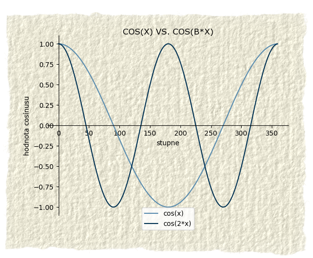
Obr. 12.: Písmeno b naťahuje alebo zužuje kosínus po šírke. Teda mení vzdialenosť medzi kopčekmi. Odbornejšie povedané mení periódu. Robí to tak, že vynásobí uhol, ktorý vstupuje do kosínusu. Napríklad ak by sme do kosínusu dávali uhly pekne po jednom stupni a vnútri kosínusu ich násobili napr. číslom 2, tak by kosínus vracal výsledky akoby pre každý druhý uhol. Pre uhol 1° by to bolo cos(2*1°)=cos(2°), pre uhol 2° by to bolo cos(2*2°)=cos(4°) atď.
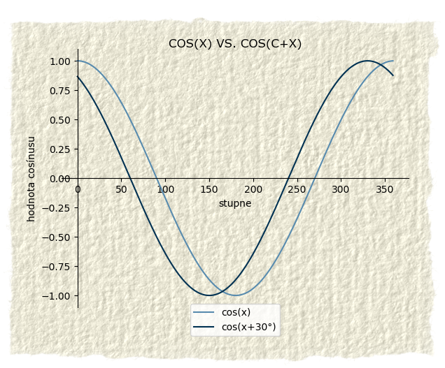
Obr. 13.: Písmeno c posúva kosínus doprava alebo doľava. Je to z toho dôvodu, že prv, než sa z uhlu x spraví kosínus, tak sa tomu uhlu pripočíta číslo c. To posunie ten uhol o c stupňov ďalej. Napríklad ak by bolo c rovné 60, tak by kosínus bol posunutý o 60° doľava. Teda pre cos(5° + c) by sa počítalo cos(5+60)=cos(65°). Teda pre uhol 5° by bol výsledok cos(65°). Takémuto posunutiu sa hovorí aj fázový posun.
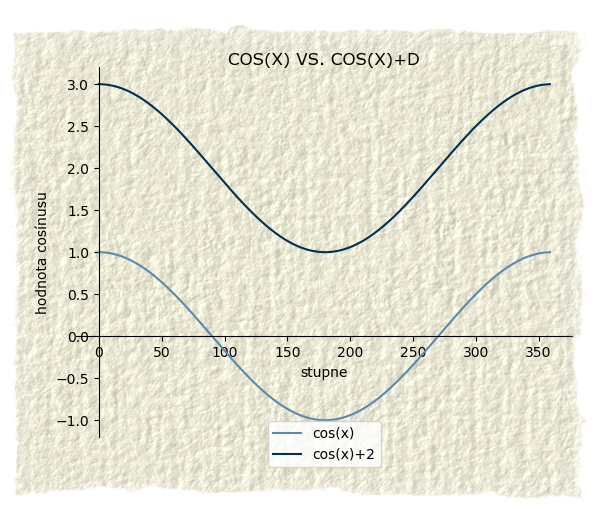
Obr. 14.: Písmeno d posúva kosínus hore alebo dolu. Deje sa to vďaka tomu, že k výsledku pripočíta nejaké číslo. Teda všetky výsledky budú o to číslo posunuté a tým pádom bude posunutý celý kosínus. Takémuto posunutiu sa hovorí vertikálny posun.
Skús si vypočítať kosínus pre pár uhlov. Všimni si, ako jednotlivé "písmená" menia hodnoty kosínusu. Nakresli si k jednotlivým kosínusom aj graf. Porozmýšľaj nad tým, ako má byť natiahnutý a posunutý.
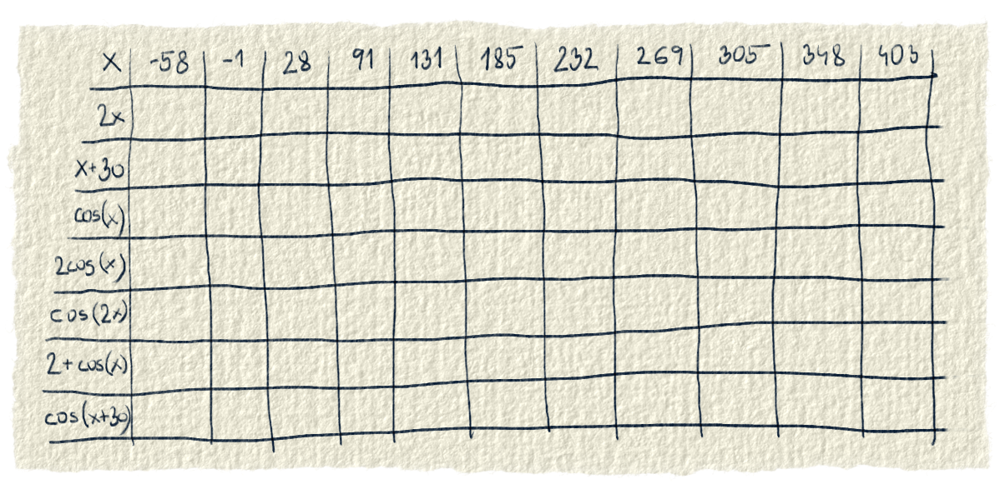
Obr. 15.: V tabuľke je zopár príkladov na vypočítanie kosínusu. Všímaj si hlavne to, ako násobenie a pričítanie nejakých čísiel zmení hodnoty kosínusu. Návod na použitie sem dávať nebudeme. Predpokladáme, že si sa úspešne prelúskal tabuľkou so sínusom (obr. 8.). Toto sa ráta takisto, iba namiesto sínusu je kosínus. Klikaním na obrázok si vieš meniť prázdnu tabuľku a tabuľku s výsledkami.
Čo viac dodať ku kosínusu. Snáď len toľko, že si ho zaži na vlastnej koži. Os x je v radiánoch nie v stupňoch, tak dávaj pozor. To isté platí aj pre písmeno c.
Tu je zopár otázok ku kosínusu:
Aké musí byť a, aby kosínus išiel na menšom rozsahu, ako od -1 po 1?
Čo sa stane, keď a bude 0?
Čo spraví s grafom záporné a?
Aké musí byť b, aby bola perióda kosínusu (vzdialenosť medzi kopčekami) väčšia ako pri cos(x)?
Aké hodnoty musí mať b, aby perióda bola menšia než pri cos(x)?
Čo sa stane, keď bude b záporné?
Aké musí byť c, aby sa graf posunul doľava?
Aké musí byť c, aby sa graf posunul doprava?
Dokáže c zmeniť kosínus na sínus? Ak áno, aké musí mať hodnoty? Vieš premeniť hodnoty z radiánov na stupne?
Pomocou písmena d posuň graf tak, aby na y osi začínal na čísle -1.
Ktorými písmenami sa dá otočiť graf tak, aby bol dolu hlavou (že neklesá od [0,1], ale rastie smerom od [0,-1] nahor)? Aké musia mať hodnoty? Prečo je to tak?
Tangens
Albert Girard bol Francúz. Žil v Holandsku, mal rád hudbu, vyštudoval matematiku a robil inžiniera v armáde princa Oranžského. V skratke toľko o človeku, ktorý asi ako prvý na svete použil slovo tangens na pomenovanie pomeru medzi protiľahlou a susednou stranou v pravouhlom trojuholníku. Slovo tangens pochádza z latinského slova tangere, čo znamená dotýkať sa. Ono to je aj pekne vidno na jednotkovej kružnici, že tangens sa jej dotýka iba v jednom bode. Ešte sa vráťme ku Girardovi. Okrem slova tangens ževraj aj ako prvý na svete použil skratky pre sínus, kosínus a tangens - sin, cos, tan. No a slovo tangens sa prvý krát objavilo v jeho diele Trigonométrie z roku 1625 [3].
Tangens je na jednotkovej kružnici zadefinovaný pomocou "oranžovej čiary" z obrázku č. 1. Dolu na obrázku je vysvetlené, prečo je to práve tá čiara.
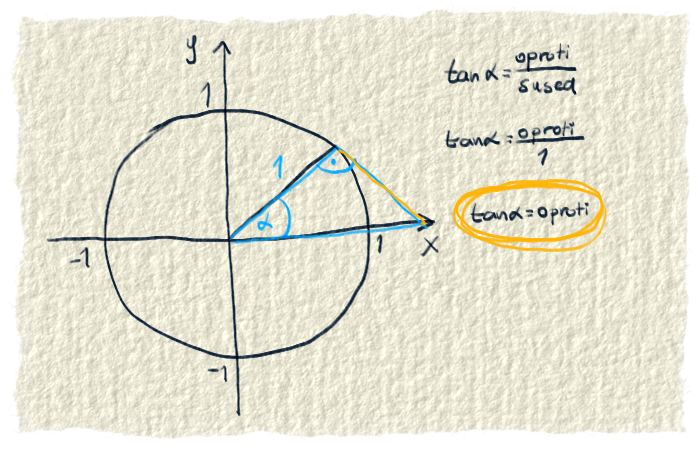
Obr. 16.: Tangens je definovaný ako protiľahlá strana / priľahlá strana. Chceme si ho zadefinovať aj na jednotkovej kružnici. Aby, sa nám ľahko počítalo, potrebujeme na jednotkovej kružnici dostať pravouhlý trojuholník s dĺžkou priľahlej strany, ktorá bude jedna. "Polomer" kružnice je tiež jedna, takže by sa nám hodil. Keď trochu pošpekulujeme, vieme tam nakresliť trojuholník, ktorý je na tomto obrázku. Potom už len ľahko dopočítame: tan(α)=protiľahlá/priľahlá, tan(α)=protiľahlá/1, tan(α)=protiľahlá. No a protiľahlá strana je tá oranžová čiara, takže tangens sa dá na jednotkovej kružnici zadefinovať pomocou oranžovej čiary.
Rovnako, ako sínus a kosínus, aj tangens sa dá zobraziť viacerými spôsobmi. Na jednotkovej kružnici vidno jeho vzťahy s ostatnými funkciami. Na grafe je vidno jeho vlastnosti. Aj tangens je periodický, v grafe vidno, že sa opakuje. V tabuľke pekne vidno presné hodnoty tangensu pre zvolené uhly.
Tangens nie je spojitá funkcia, čo znamená, že jeho graf nie je jedna dlhá neprerušená čiara. Graf tangensu tvoria krivky, ktoré idú od -∞ po ∞ . Je to preto, lebo pre uhly 90° a 270° "oranžová čiara" z obr. 1. (pomocou ktorej je definovaný tangens) na jednotkovej kružnici ide do nekonečna. Dobre to je vidno na animácií z článku Goniometrické funkcie. Do nekonečna ide preto, lebo tangens je dĺžka protiľahlej strany, u nás tá oranžová čiara. Na spomínanej animácií si môžeš všimnúť, že pri 90° a 270° trojuholník nachvíľu zaniká, lebo tá oranžová čiara (protiľahlá strana) sa nepretína s osou x. V tej chvíli oranžová čiara ide do nekonečna a keďže tangens je dĺžka tej čiary, tak aj tangens je nekonečno. Pri uhloch blízkych 90° a 270° sú hodnoty tangensu veľmi veľké, pretože tá oranžová čiara je veľmi dlhá.
Obr. 17.: Tangens je vypočítaný pre pár uhlov. Sú to uhly aj záporné a aj väčšie ako 360°. Tangens má periódu 180°, teda každých 180° nájdeš na ňom rovnaké hodnoty. Zobrazený je v grafe, na jednotkovej kružnici a namiesto tabuľky sú tu len aktuálne hodnoty pre x (uhly) a tangens.
Rovnako ako sínus a kosínus, aj tangens sa dá naťahovať. Znovu na to slúžia písmenká a,b,c,d, za ktoré sa dajú dosadiť čísla.
$$ a \cdot tan(b \cdot x + c) + d $$
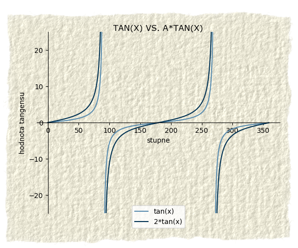
Obr. 18.: Písmenom a sa násobí výsledok tangensu. Po tomto násobení sa výsledok a-krát zväčší. Na obrázku je zväčšený dva-krát. Na grafe sa to prejaví tak, že bude strmší. Takémuto natiahnutiu sa hovorí aj amplitúda.
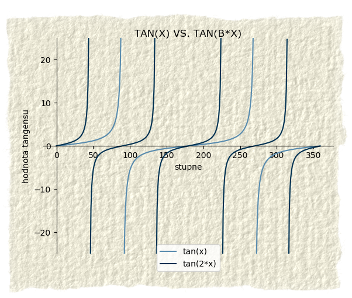
Obr. 19.: Písmeno b mení dĺžku periódy tangensu, teda vzdialenosť medzi tými čiarami. Deje sa to kvôli tomu, že za x sa síce dosadí nejaká hodnota, ale b ju zmení, čiže tangens sa robí z iného uhla. Funguje to rovnako ako pri sínuse a kosínuse.
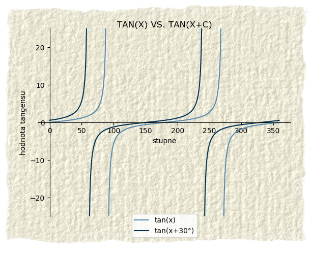
Obr. 20.: Písmeno c posúva tangens doprava alebo doľava. Keďže sa vnútri tangensu k x vždy pripočíta rovnaké číslo, tak všetky hodnoty budú rovnako posunuté. Tým pádom bude posunutý celý tangens. Posunutiu doprava alebo doľava sa hovorí fázový posun.
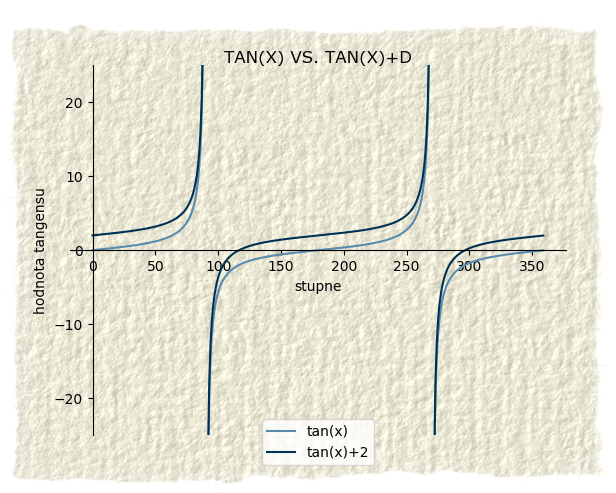
Obr. 21.: Písmeno d posúva graf hore alebo dole. Deje sa to vďaka tomu, že sa k výsledku tangensu pripočíta nejaké číslo. Ku každému výsledku tangensu sa pripočíta to číslo, tým pádom sú o to číslo posunuté všetky výsledky a teda aj celá funkcia. Posunutiu hore alebo dole sa hovorí vertikálny posun.
Skús si vypočítať tangens niektorých uhlov. Vyrátaj aj posunuté tangensy a porozmýšľaj nad tým, ktoré písmenko ako a prečo spravilo s tangensom to, čo spravilo. Keď si ich nakreslíš do grafu, veríme, že sa ti bude nad tým rozmýšľať lepšie.
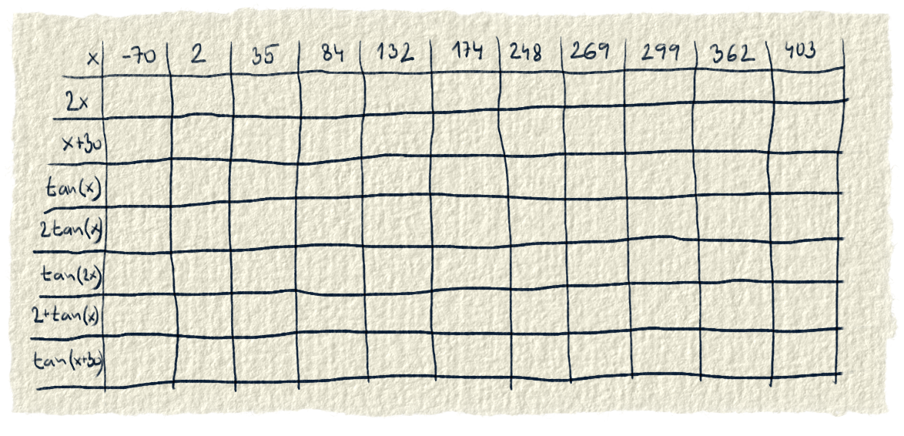
Obr. 22.: Tabuľka na precvičenie tangensu. Zase si všimni, ako jednotlivé "písmenká" menia hodnoty tangensu. Klikaním na obrázok si vieš meniť prázdnu tabuľku a tabuľku s výsledkami.
Tu je pripravené ihrisko s tangensom. Môžeš grafu robiť zle koľko chceš, ale skús pri tom porozmýšľať, prečo je tangens práve taký, aký je. Aj tu máme pre teba upozornenie. Os x nie je v stupňoch, ale v radiánoch. Takisto aj písmeno c je v radiánoch. Skús prísť na to, že prečo c je v radiánoch a ostatné písmenká nemajú jednotky.
Na záver zopár otázok k tangensu:
Ak by a išlo od 0 po 1, bol by graf strmší alebo miernejší, ako pri obyčajnom tan(x)?
Čo sa stane, keď a bude 0?
Čo sa stane, keď a bude záporné?
Prečo sa tangens zmení na konštantnú funkciu, keď je a=0?
Ako písmeno b zmení funkciu? Čo sa s ňou deje?
Čo sa stane, keď bude b záporné?
Dokáže aj b spraviť z tangensu konštantnú funkciu?
Aké musí byť c, aby sa graf posunul doľava?
Aké musí byť c, aby sa graf posunul doprava?
Čo robí s grafom zmena písmena d?
Zdroje
[1] Merlet, J. P. 2004. A NOTE ON THE HISTORY OF TRIGONOMETRIC FUNCTIONS AND SUBSTITUTIONS. http://www.math.stonybrook.edu/~tony/history-resources/HISTORY_OF_TRIGONOMETRIC_F.pdf
[2] Wikipedia. 2021. Edmund Gunter.https://en.wikipedia.org/wiki/Edmund_Gunter
[3] O'Connor, J. J., Robertson E. F. 2010. Albert Girard. https://mathshistory.st-andrews.ac.uk/Biographies/Girard_Albert/